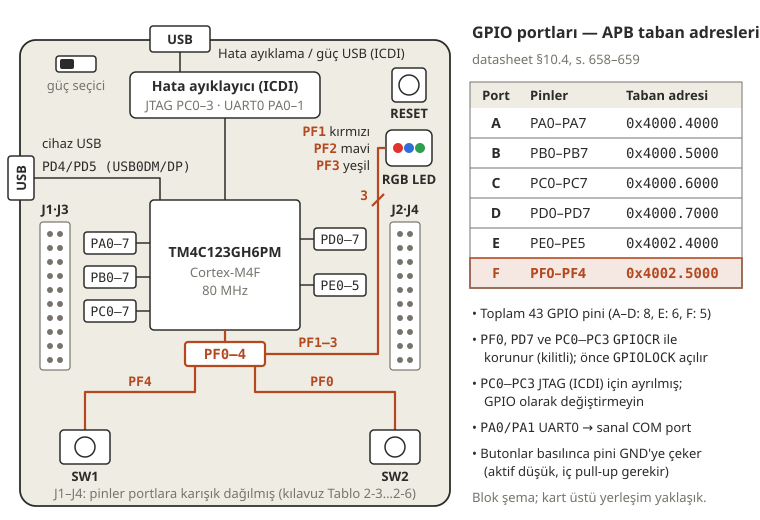
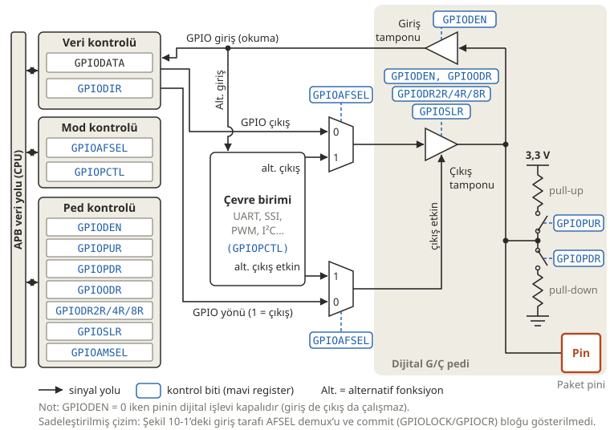
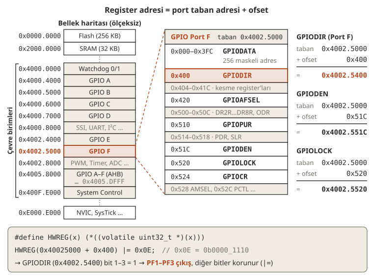
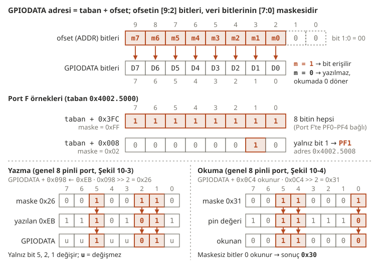
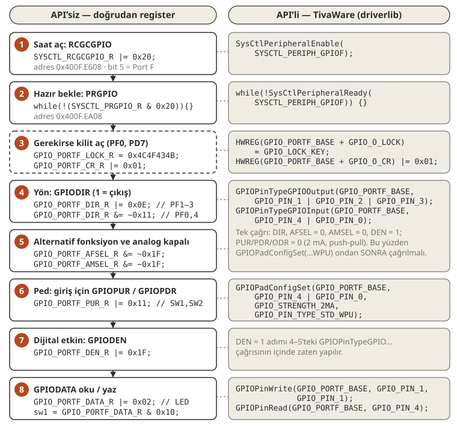
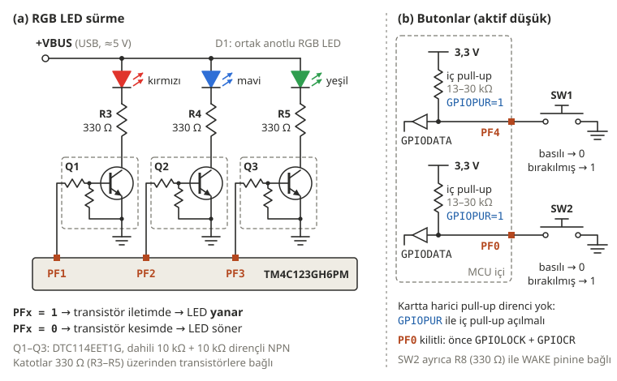

GPIO: Genel Amaçlı Giriş/Çıkış
Mikrodenetleyicinin dış dünyaya açılan en temel kapısı GPIO pinleridir. Bu notta Tiva C LaunchPad üzerindeki LED'leri ve butonları önce doğrudan register'larla (API'siz), sonra TivaWare kütüphanesiyle (API'li) kullanacağız. İki yolu da bilen öğrenci, kütüphanenin arkasında ne olduğunu da görmüş olur.
Bu notun sonunda öğrenci:
- TM4C123GH6PM'nin GPIO portlarını (A–F), LaunchPad'deki RGB LED (PF1–PF3) ve buton (PF4, PF0) bağlantılarını açıklayabilir.
- Bir GPIO pinini yöneten temel register'ları (DATA, DIR, DEN, AFSEL, PUR/PDR, LOCK/CR, AMSEL, PCTL) ve görevlerini sayabilir.
- Bir register'ın adresini taban adres + ofset olarak hesaplayıp
HWREGya davolatileişaretçi ile erişebilir. - GPIODATA adres maskelemesini kullanarak tek bir pini diğerlerini bozmadan yazabilir ve okuyabilir.
- Bir portu datasheet sırasıyla başlatabilir (saat → hazır bekleme → gerekirse kilit → DIR → AFSEL/PCTL/AMSEL → PUR/PDR → DEN → DATA) ve PF0 kilidini açabilir.
- Aynı işi hem doğrudan register erişimiyle hem de TivaWare fonksiyonlarıyla (
GPIOPinWrite,GPIOPinRead,GPIOPadConfigSet…) yazabilir. - Aktif-düşük buton okuma, yazılım gecikmesi ve kendi başlatma fonksiyonunu/kütüphanesini yazma becerisini kazanır.
1. GPIO nedir?
GPIO (General-Purpose Input/Output), yazılımla giriş ya da çıkış olarak ayarlanabilen dijital bir pindir. Çıkış olarak ayarlanan pin, programdaki bir biti gerilime çevirir: 1 yazınca pin yaklaşık 3,3 V, 0 yazınca 0 V olur. Giriş olarak ayarlanan pin ise dışarıdaki gerilimi okur ve programa 1 ya da 0 olarak verir. LED yakmak, röle sürmek, buton okumak gibi işlerin hepsi bu basit mekanizmayla yapılır.
Aynı fiziksel pin, GPIO yerine bir çevre biriminin (UART, SPI, PWM, ADC…) sinyali olarak da kullanılabilir. Buna alternatif işlev denir ve hangi işlevin seçileceğini yine register'lar belirler (AFSEL, PCTL, AMSEL). Bu notta pinleri yalnızca GPIO olarak kullanıyoruz.
TM4C123GH6PM'nin portları
Datasheet'in 10. bölümüne göre (s. 649) GPIO modülü altı ayrı porttan oluşur: Port A, B, C, D, E ve F. 64 bacaklı kılıfta yapılandırmaya bağlı olarak toplam 43 GPIO pini vardır. Her port 8 bitlik bir birimdir, ancak her portta 8 pinin hepsi dışarı çıkmaz:
| Port | Pinler | Sayı | Not |
|---|---|---|---|
| A | PA0–PA7 | 8 | PA0/PA1'in PCTL açılış değeri UART0'ı seçer (LaunchPad'de sanal COM portu). |
| B | PB0–PB7 | 8 | PB0/PB1 5 V toleranslı değildir (en çok 3,6 V). |
| C | PC0–PC7 | 8 | PC0–PC3 JTAG/SWD hata ayıklama pinleridir; dokunmayın. |
| D | PD0–PD7 | 8 | PD7 kilitlidir (NMI). PD4/PD5 USB D-/D+ olarak kullanılabilir (LaunchPad'de USB konnektörüne bağlı) ve 3,6 V ile sınırlıdır. |
| E | PE0–PE5 | 6 | |
| F | PF0–PF4 | 5 | LaunchPad'in LED ve butonları burada. PF0 kilitlidir (NMI). |
| Toplam | 43 | ||
Datasheet'teki önemli özellikler (s. 649):
- Giriş olarak ayarlanan pinler 5 V toleranslıdır. İstisnalar PD4, PD5, PB0 ve PB1'dir; bunlar 3,6 V ile sınırlıdır. Çıkışlar ise 5 V değil, 3,3 V verir.
- Dijital girişler Schmitt tetiklemelidir. Her pine zayıf pull-up/pull-down direnci (pull-up 13–30 kΩ, pull-down 13–35 kΩ, tipik 20 kΩ; datasheet Tablo 24-29, s. 1385) ve açık-kanal (open drain) seçeneği atanabilir.
- Çıkış sürme akımı 2, 4 ya da 8 mA seçilebilir. Yüksek akım isteyen işler için en çok dört pin 18 mA çekebilir (sink).
- Her pin kesme (interrupt) kaynağı olabilir: yükselen/düşen kenarda, her iki kenarda ya da seviyeye duyarlı. Kesmeler ayrı bir notun konusudur.
- Portlar iki farklı veri yolundan erişilebilir: AHB üzerindeki port her saat çevriminde, APB üzerindeki port iki çevrimde bir pin değiştirebilir.
LaunchPad'deki LED ve butonlar
EK-TM4C123GXL kartında kullanıcıya ayrılmış bir RGB LED ve iki buton vardır (LaunchPad Kullanım Kılavuzu, SPMU296, Tablo 2-2). Hepsi Port F'ye bağlıdır (Şekil 1). Bu yüzden derste hemen hemen her örnek Port F ile başlar.
| Pin | Bağlı olduğu eleman | Bit değeri | Yön |
|---|---|---|---|
| PF1 | RGB LED – kırmızı | 0x02 | çıkış |
| PF2 | RGB LED – mavi | 0x04 | çıkış |
| PF3 | RGB LED – yeşil | 0x08 | çıkış |
| PF4 | SW1 (sol buton) | 0x10 | giriş, pull-up |
| PF0 | SW2 (sağ buton) | 0x01 | giriş, pull-up, kilitli |

Renkler karıştırılabilir: kırmızı + yeşil = sarı (0x0A), kırmızı + mavi = mor (0x06), mavi + yeşil = camgöbeği (0x0C), üçü birden = beyaza yakın (0x0E).
LaunchPad'de PD0–PB6 ve PD1–PB7 pinleri 0 Ω dirençlerle (R9, R10) birbirine bağlıdır. Bu pin çiftlerini aynı anda farklı amaçlarla kullanmayın.
2. Pinin iç yapısı ve GPIO register'ları
Her port, aynı donanım bloğunun bir kopyasıdır. Bir pinin davranışını o portun register'larındaki aynı numaralı bit belirler. Örneğin PF3'ün yönü GPIODIR'in bit3'ünde, dijital etkinliği GPIODEN'in bit3'ünde, verisi GPIODATA'nın bit3'ünde tutulur. Kısacası register'lar 8 pinlik bir portun "ayar tablosu" gibidir; her sütun bir pine karşılık gelir.

Şekil 2'deki yolu bir çıkış ve bir giriş için izleyelim:
- Çıkış: AFSEL = 0, DEN = 1 ve DIR = 1 olduğunda pini GPIO mantığı sürer: çıkış tamponu açılır ve GPIODATA'daki bit pad'e çıkar (datasheet Tablo 10-3). Sürme akımını DR2R/DR4R/DR8R, açık-kanal davranışını ODR belirler.
- Giriş: DIR = 0 olduğunda çıkış tamponu kapalıdır. DEN = 1 ise pad'deki gerilim giriş tamponundan geçip GPIODATA'dan okunur. Pin boşta kalırsa (ör. buton açıkken) PUR ya da PDR ile tanımlı bir seviyeye çekilmelidir.
- DEN = 0 iken pin ne dijital giriş ne de dijital çıkıştır. Açılışta pinlerin çoğu bu durumdadır, yani üç durumlu (tristate). Bu yüzden DEN'i unutmak en yaygın hatadır.
GPIO register tablosu
Ofsetler port taban adresine eklenir. Değerler ve sayfa numaraları TM4C123GH6PM datasheet'inden alınmıştır (Tablo 10-6, s. 660).
| Register | Ofset | Görev (bit = 1 olunca) | Datasheet |
|---|---|---|---|
| GPIODATA | 0x000 (+ maske, tümü için 0x3FC) | Pin verisi: çıkışa yazılır, girişten okunur. Adres bitleri [9:2] maske görevi görür. | s. 662 |
| GPIODIR | 0x400 | 1 = çıkış, 0 = giriş. | s. 663 |
| GPIOIS … GPIOICR | 0x404–0x41C | Kesme ayarları (algılama türü, kenar, maske, durum, temizleme). Kesmeler notunda. | s. 664–670 |
| GPIOAFSEL | 0x420 | 1 = pin alternatif işlevde (çevre birimi sürer), 0 = GPIO. | s. 671 |
| GPIODR2R / DR4R / DR8R | 0x500 / 0x504 / 0x508 | Çıkış sürme akımı 2 / 4 / 8 mA. Açılışta DR2R = 0xFF, yani 2 mA. | s. 673–675 |
| GPIOODR | 0x50C | Açık-kanal (open drain) çıkış. | s. 676 |
| GPIOPUR | 0x510 | Zayıf iç pull-up direnci. | s. 677 |
| GPIOPDR | 0x514 | Zayıf iç pull-down direnci. | s. 679 |
| GPIOSLR | 0x518 | 8 mA sürmede kenar eğimi (slew rate) kontrolü. | s. 681 |
| GPIODEN | 0x51C | Dijital işlevi etkinleştirir. Dijital G/Ç için şarttır. | s. 682 |
| GPIOLOCK | 0x520 | 0x4C4F434B yazılınca GPIOCR yazılabilir olur. Başka bir değer yazılırsa ya da GPIOCR'ye yazılırsa yeniden kilitlenir. | s. 684 |
| GPIOCR | 0x524 | Commit: AFSEL, PUR, PDR ve DEN'deki ilgili bitin değiştirilmesine izin verir. | s. 685 |
| GPIOAMSEL | 0x528 | Analog işlev (ADC girişi). Dijital kullanımda 0 olmalıdır. | s. 687 |
| GPIOPCTL | 0x52C | Her pin için 4 bitlik alan: hangi çevre biriminin sinyali seçilecek. GPIO için 0. | s. 688 |
Saat kapısı register'ları GPIO bloğunda değil, Sistem Kontrol (SYSCTL) bloğundadır:
| Register | Adres | Görev | Datasheet |
|---|---|---|---|
| RCGCGPIO | 0x400FE608 (SYSCTL + 0x608) | Çalışma modunda port saatini açar. Bit0 = A … bit5 = F. | s. 340 |
| PRGPIO | 0x400FEA08 (SYSCTL + 0xA08) | Salt okunur. Bit = 1 ise port erişime hazırdır. | s. 406 |
| GPIOHBCTL | 0x400FE06C (SYSCTL + 0x06C) | Portun APB'den mi AHB'den mi erişileceğini seçer (0 = APB, açılış değeri). | s. 258 |
| RCGC2 (eski) | 0x400FE108 | Eski yazılımlarla uyumluluk için tutulan saat register'ı. Yeni kodda RCGCGPIO tercih edilmelidir. | s. 340 notu |
RCGCGPIO bitleri: 0x01 = A, 0x02 = B, 0x04 = C, 0x08 = D, 0x10 = E, 0x20 = F. Örneklerdeki SYSCTL_RCGCGPIO_R |= 0x20; satırı bu yüzden "Port F'nin saatini aç" demektir.
3. Bellek haritası ve register erişimi
ARM Cortex-M4'te çevre birimleri belleğe eşlenmiştir (memory-mapped I/O). Her register 32 bitlik bir bellek adresidir. Bu adrese yazmak donanımı ayarlar, okumak da donanımın durumunu getirir. Bir register'ın adresi şöyle hesaplanır:
register adresi = port taban adresi + register ofseti (Şekil 3)

HWREG(x) makrosu, verilen adresi volatile uint32_t işaretçisine çevirip içeriğine erişir. SYSCTL taban adresi 0x400FE000'dır.Taban adresler (APB ve AHB)
Her portun iki adres penceresi vardır (datasheet s. 658–659). Açılışta tüm portlar APB (Advanced Peripheral Bus) üzerindendir ve TivaWare'deki GPIO_PORTF_BASE gibi adlar APB adresidir. AHB (Advanced High-performance Bus) penceresi arka arkaya erişimde daha hızlıdır, ancak önce GPIOHBCTL'deki ilgili bitin 1 yapılması gerekir (TivaWare: SysCtlGPIOAHBEnable()). Bir port aynı anda yalnız bir pencereden erişilebilir.
| Port | APB taban | AHB taban | TivaWare adı (APB) |
|---|---|---|---|
| A | 0x40004000 | 0x40058000 | GPIO_PORTA_BASE |
| B | 0x40005000 | 0x40059000 | GPIO_PORTB_BASE |
| C | 0x40006000 | 0x4005A000 | GPIO_PORTC_BASE |
| D | 0x40007000 | 0x4005B000 | GPIO_PORTD_BASE |
| E | 0x40024000 | 0x4005C000 | GPIO_PORTE_BASE |
| F | 0x40025000 | 0x4005D000 | GPIO_PORTF_BASE |
Port F için birkaç hazır hesap:
| Register | Hesap | Adres | tm4c123gh6pm.h adı |
|---|---|---|---|
| GPIODATA (tüm pinler) | 0x40025000 + 0x3FC | 0x400253FC | GPIO_PORTF_DATA_R |
| GPIODIR | 0x40025000 + 0x400 | 0x40025400 | GPIO_PORTF_DIR_R |
| GPIOPUR | 0x40025000 + 0x510 | 0x40025510 | GPIO_PORTF_PUR_R |
| GPIODEN | 0x40025000 + 0x51C | 0x4002551C | GPIO_PORTF_DEN_R |
| GPIOLOCK | 0x40025000 + 0x520 | 0x40025520 | GPIO_PORTF_LOCK_R |
| GPIOCR | 0x40025000 + 0x524 | 0x40025524 | GPIO_PORTF_CR_R |
HWREG ve doğrudan adresleme
C'de bir sayıyı adres olarak kullanmak için onu işaretçiye çevirip içeriğine erişiriz. Bu iş için TivaWare'in inc/hw_types.h dosyasında şu makro vardır:
#define HWREG(x) (*((volatile uint32_t *)(x)))HWREG(0x40025400) |= 0x0E; satırı "0x40025400 adresindeki 32 bitlik değeri oku, 0x0E ile VEYA'la, geri yaz" anlamına gelir. volatile anahtar sözcüğü derleyiciye "bu adresin içeriği senin bilmediğin bir şekilde değişebilir, erişimleri silme ya da birleştirme" der. Bu sözcük olmazsa derleyici, ör. bir buton okuma döngüsünü tek okumaya indirebilir.
Aynı register'a dört farklı yazımla erişilebilir. İlk üçü derleyicide aynı makine komutlarına dönüşür; API'deki GPIODirModeSet ise aynı DIR ayarını (ve AFSEL = 0) bir fonksiyon çağrısıyla yapar:
| Yöntem | Örnek (PF1–PF3 çıkış) | Gerekli başlık |
|---|---|---|
Kendi #define'ımız | (*((volatile unsigned long *)0x40025400)) |= 0x0E; | yok |
| Hazır register adları | GPIO_PORTF_DIR_R |= 0x0E; | inc/tm4c123gh6pm.h |
| HWREG + sembolik ofset | HWREG(GPIO_PORTF_BASE + GPIO_O_DIR) |= 0x0E; | hw_types.h, hw_memmap.h, hw_gpio.h |
| TivaWare API | GPIODirModeSet(GPIO_PORTF_BASE, 0x0E, GPIO_DIR_MODE_OUT); | driverlib/gpio.h + driverlib.lib |
GPIODATA adres maskeleme
GPIODATA tek bir adres değil, 256 adreslik bir penceredir (taban + 0x000 … taban + 0x3FC). Erişilen adresin [9:2] bitleri bir maske gibi davranır (datasheet 10.2.1.2, s. 654; Şekil 4):
- Yazarken: maskede 1 olan bitler değişir, 0 olan bitler olduğu gibi kalır.
- Okurken: maskede 1 olan bitler gerçek değeriyle, 0 olanlar 0 olarak okunur.
Bir pin kümesi için adres taban + (maske << 2), yani taban + 4 × maske olur. Derste kullanılan notlardaki "taban + 4·2b" formülü, tek bir b biti için bunun özel halidir.

| Hedef pinler | Maske | Ofset (maske × 4) | Port F adresi |
|---|---|---|---|
| PF1 (kırmızı) | 0x02 | 0x008 | 0x40025008 |
| PF2 (mavi) | 0x04 | 0x010 | 0x40025010 |
| PF3 (yeşil) | 0x08 | 0x020 | 0x40025020 |
| PF1 + PF3 | 0x0A | 0x028 | 0x40025028 |
| PF1 + PF2 + PF3 | 0x0E | 0x038 | 0x40025038 |
| PF0 + PF4 (butonlar) | 0x11 | 0x044 | 0x40025044 |
| Tüm pinler | 0xFF | 0x3FC | 0x400253FC |
Yazma örneği: HWREG(0x40025008) = 0xFF; yalnızca PF1'i 1 yapar; mavi ve yeşil LED'in durumu değişmez. Okuma örneği: HWREG(0x40025044) yalnız PF4 ve PF0'ı getirir. İki buton da bırakılmışsa 0x11, yalnız SW1 basılıysa 0x01 okunur. Datasheet'teki örnekte 0xEB değeri GPIODATA + 0x098'e yazılır ve yalnız bit5, bit2 ve bit1 yazılır (0x098 / 4 = 0x26 = 0010 0110).
GPIO_PORTF_DATA_R |= 0x02; aslında üç adımdır: oku, değiştir, geri yaz (read-modify-write). Bu adımların arasında bir kesme aynı portun başka bir bitini değiştirirse o değişiklik kaybolabilir. Maskeli adrese tek bir yazma ise atomiktir: hem daha kısadır hem de diğer pinleri hiç etkilemez. TivaWare'in GPIOPinWrite(base, pins, val) fonksiyonu tam olarak HWREG(base + (pins << 2)) = val; işlemini yapar. GPIOPinRead(base, pins) da aynı adresten okur.
4. Başlatma adımları
Datasheet'in 10.3 bölümü (s. 656–657) bir portu kullanıma hazırlamak için bir sıra önerir. LaunchPad'deki LED ve buton işleri için gereken kısmı Şekil 5'te ve aşağıdaki listede verilmiştir:

Adım adım
- Saati aç: RCGCGPIO'da portun bitini 1 yap. Saati kapalı bir portun register'ına erişmek bus fault üretir ve program
FaultISRiçinde takılı kalır. - Hazır olmasını bekle: Datasheet, saat açıldıktan sonra GPIO register'larına erişmeden önce 3 sistem saati beklenmesini ister (s. 659). Bunun için PRGPIO'nun ilgili biti 1 olana kadar beklenir ya da derste kullanılan örneklerde olduğu gibi RCGCGPIO'dan boş bir okuma yapılır.
- (Gerekirse) kilidi aç: PF0 ve PD7 kullanılacaksa LOCK'a anahtar değer yazılır ve CR'nin ilgili biti 1 yapılır (aşağıda).
- Yönü ayarla: GPIODIR'de çıkış pinleri için 1, giriş pinleri için 0.
- GPIO işlevini seç: AFSEL = 0, PCTL = 0, AMSEL = 0. Bunlar çoğu pinde zaten açılış değeridir, bu yüzden birçok örnekte yazılmaz. İstisnalar: PCTL, PA0–PA5 ve PB2–PB3'te sıfırdan farklıdır; AFSEL = 1 olan tek grup PC0–PC3'tür (Tablo 10-1).
- Pad ayarları: Girişte pull-up/pull-down (PUR/PDR), gerekirse sürme akımı (DR2R/4R/8R) ve açık-kanal (ODR).
- Dijitali etkinleştir: GPIODEN'de kullanılan pinlerin bitini 1 yap.
- Kullan: GPIODATA'ya yaz ya da GPIODATA'dan oku.
Saat açıldıktan sonra beklemenin iki temiz yolu:
SYSCTL_RCGCGPIO_R |= 0x20; // Port F saatini aç
while((SYSCTL_PRGPIO_R & 0x20) == 0) {} // Port F hazır olana kadar bekle (0x400FEA08)SysCtlPeripheralEnable(SYSCTL_PERIPH_GPIOF);
while(!SysCtlPeripheralReady(SYSCTL_PERIPH_GPIOF)) {}PF0 / PD7 kilidi (LOCK ve CR)
Hata ayıklayıcıyı ya da NMI girişini yanlışlıkla bozmamak için altı pin korunur: PC0–PC3 (JTAG/SWD), PD7 ve PF0 (NMI). Bu pinlerde AFSEL, PUR, PDR ve DEN bitlerine yapılan yazmalar, ilgili GPIOCR biti 1 olmadıkça sessizce yok sayılır (datasheet 10.2.4, s. 656). GPIOCR de yalnızca GPIOLOCK açıkken yazılabilir. Sonuç olarak SW2 (PF0) kullanılacaksa şu üç adım gerekir:
GPIO_PORTF_LOCK_R = 0x4C4F434B; // anahtar: ASCII "LOCK"; GPIOCR yazılabilir olur
GPIO_PORTF_CR_R |= 0x01; // PF0 için commit izni
/* ... ardından PUR ve DEN'e PF0 biti yazılabilir ... */
GPIO_PORTF_LOCK_R = 0; // (isteğe bağlı) yeniden kilitleTivaWare'de aynısı HWREG(GPIO_PORTF_BASE + GPIO_O_LOCK) = GPIO_LOCK_KEY; ve HWREG(GPIO_PORTF_BASE + GPIO_O_CR) |= 0x01; satırlarıyla yapılır (kitapçık s. 3-8). TivaWare 2.2'de bunu yapan GPIOUnlockPin() fonksiyonu da vardır (SW-TM4C-DRL-UG 14.2.3.49); TivaWare 2.1.x sürümlerinde yoktur, kurulu sürümü kontrol edin. Kilit yokken GPIOLOCK'tan 0, kilitliyken 1 okunur. Korunmayan pinlerde CR bitleri donanımca 1'e sabitlenmiştir, yani CR = 0x1F ya da 0xFF yazmak zararsızdır.
JTAG/SWD pinlerini GPIO'ya çeviren bir program yüklerseniz hata ayıklayıcı karta bir daha bağlanamayabilir. Kurtarmak için LM Flash Programmer'ın "Unlock" özelliği gerekir (datasheet s. 653).
TivaWare karşılıkları
| TivaWare çağrısı | Ne yapar (register düzeyinde) |
|---|---|
SysCtlClockSet(SYSCTL_SYSDIV_5|SYSCTL_USE_PLL|SYSCTL_XTAL_16MHZ|SYSCTL_OSC_MAIN) | Sistem saatini ayarlar: 16 MHz kristal → 400 MHz PLL → /2 → /5 = 40 MHz. SYSDIV_4 ile 50 MHz olur. Hiç çağrılmazsa CPU iç osilatörden (PIOSC) 16 MHz ile çalışır. |
SysCtlPeripheralEnable(SYSCTL_PERIPH_GPIOF) | RCGCGPIO'da Port F bitini 1 yapar. |
SysCtlPeripheralReady(SYSCTL_PERIPH_GPIOF) | PRGPIO'daki Port F bitini döndürür. |
GPIOPinTypeGPIOOutput(base, pins) | DIR = 1, AFSEL = 0, 2 mA standart (push-pull) pad, DEN = 1. |
GPIOPinTypeGPIOInput(base, pins) | DIR = 0, standart pad, DEN = 1. Pull-up açmaz. |
GPIOPadConfigSet(base, pins, GPIO_STRENGTH_4MA, GPIO_PIN_TYPE_STD_WPU) | DR4R ve PUR bitlerini (WPU = weak pull-up) ayarlar. WPD: pull-down, OD: açık-kanal. |
GPIOPinWrite(base, pins, val) | HWREG(base + (pins << 2)) = val. val bit konumunda olmalıdır: PF3 için 1 değil, 8. |
GPIOPinRead(base, pins) | Maskeli okuma. Seçilmeyen bitler 0 gelir. PF4 yüksekse 1 değil, 0x10 döner. |
SysCtlDelay(n) | Her turu 3 çevrim süren bir döngü: süre ≈ 3·n / fsys. 40 MHz'te SysCtlDelay(2000000) ≈ 0,15 s. |
Örnek: tam başlatma fonksiyonu
Aşağıdaki fonksiyon Port F'yi LED ve butonlar için eksiksiz hazırlar. Datasheet sırasını adım adım izlediği için başvuru kodu olarak kullanılabilir. Dosyadaki main içinde kullanılmayan değişkenler ve iptal edilmiş bir while(0) bloğu vardı; burada yalnız fonksiyon verilmiştir.
void PortF_Init(void){
volatile unsigned long delay;
SYSCTL_RCGC2_R |= 0x00000020; // 1) Port F saati (eski tip RCGC2 register'ı)
delay = SYSCTL_RCGC2_R; // saat otursun diye boş okuma
GPIO_PORTF_LOCK_R = 0x4C4F434B; // 2) Port F kilidini aç
GPIO_PORTF_CR_R = 0x1F; // PF4-0 değişikliğe açık (aslında yalnız PF0 kilitlidir)
GPIO_PORTF_AMSEL_R = 0x00; // 3) analog işlev kapalı
GPIO_PORTF_PCTL_R = 0x00000000; // 4) PF4-0 GPIO olarak
GPIO_PORTF_DIR_R = 0x0E; // 5) PF4, PF0 giriş; PF3-1 çıkış
GPIO_PORTF_AFSEL_R = 0x00; // 6) alternatif işlev yok
GPIO_PORTF_PUR_R = 0x11; // PF0 ve PF4 pull-up
GPIO_PORTF_DEN_R = 0x1F; // 7) PF4-0 dijital etkin
}Bu kod saat için eski SYSCTL_RCGC2_R register'ını kullanır. Datasheet, yeni kodda RCGCGPIO'nun kullanılmasını önerir; RCGC2'ye yazmak RCGCGPIO'daki aynı biti de değiştirir (s. 340).
5. LED ve buton devreleri

LED tarafı (Şekil 6). Kart şemasına göre RGB LED ortak anotludur. Her renk, bir NPN transistör (DTC114E, dirençleri içinde) ve 330 Ω'luk seri direnç üzerinden sürülür. GPIO pinine 1 yazınca transistör iletime girer ve LED yanar; 0 yazınca söner. Yazılım açısından LED'ler aktif-yüksektir. Ortak anot USB'den gelen 5 V (VBUS) hattına bağlıdır (SPMU296 şeması); transistör sayesinde LED akımı GPIO pininden değil bu hattan çekilir ve pinin 2 mA'lık varsayılan sürme gücü yeterlidir.
Buton tarafı. SW1 ve SW2, pini doğrudan toprağa (GND) bağlar. Kartta harici pull-up direnci yoktur. Buton açıkken pin boşta kalır (floating) ve rastgele değer okunur. Bu yüzden iç pull-up (GPIOPUR) mutlaka açılmalıdır:
| Buton durumu | Pin gerilimi | Okunan bit |
|---|---|---|
| Bırakılmış | ~3,3 V (pull-up üzerinden) | 1 |
| Basılı | 0 V (GND'ye kısa devre) | 0 |
Butonlar bu yüzden aktif-düşüktür: "basıldı mı?" sorusunun cevabı (okunan & maske) == 0 koşuludur.
Kart dışına LED bağlarken pin → seri direnç → LED → GND bağlantısı kullanılır. 3,3 V çıkışta kırmızı bir LED'den 330 Ω ile yaklaşık 4–5 mA akar. Bu durumda pin 8 mA sürmeye (GPIODR8R) ayarlanmalı ya da direnç büyütülmelidir (ör. 1 kΩ ≈ 1,5 mA). Sürme ayarı akımı sınırlamaz; akımı seri direnç belirler. Daha büyük yükler (röle, motor) transistör ya da sürücü entegresiyle sürülmelidir.
6. Örnekler
Bu bölümdeki kodlar derste kullanılan örnek dosyalarından alınmıştır. Her kodun üstünde kaynak dosyanın adı yazar. Mantık değiştirilmemiştir; yalnızca açıklamalar Türkçeleştirilmiş ve kısaltılmış, kullanılmayan ya da yoruma alınmış satırlar atılmıştır. Atılan kısımlar her örnekte belirtilmiştir. Bu örneklerin bazıları saat açıldıktan sonra beklemeden register'a erişir. Optimizasyonsuz derlemede araya giren komutlar çoğu zaman yeterli süreyi sağlar, ama bu güvence değildir; kendi kodunuzda PRGPIO beklemesini ekleyin (Bölüm 4). API'siz kodlar doğrudan register'lara erişir, API'li kodlar TivaWare driverlib fonksiyonlarını kullanır.
API'li örnekler için CCS projesinde include yoluna TivaWare kök klasörü eklenmeli ve driverlib.lib projeye bağlanmalıdır. API'siz örnekler için #include <stdint.h> ve ardından #include "inc/tm4c123gh6pm.h" yeterlidir (TivaWare başlığı uint32_t kullanır). Include yoluna TivaWare kökü yine eklenmelidir. gpio_001 örneği ise hiçbir başlık dosyası kullanmaz.
6.1 LED yakıp söndürme
Amaç: Kart üstündeki kırmızı LED'i belirli aralıklarla yakıp söndürmek ve bunun için gereken en az register ayarını görmek. Donanım: PF1 (kırmızı), API'li örnekte PF1–PF3.
En kısa hali: üç register
Klasör adı "api_baslangic" olsa da bu kod API kullanmaz. Port F'nin saatini açar, PF1–PF3'ü çıkış yapar, dijitali etkinleştirir ve kırmızıyı yakıp söndürür. Kullanılmayan #include "inc/hw_types.h" satırı atılmıştır. PF1 kilitli olmadığı ve açılışta zaten GPIO olduğu için LOCK, AFSEL, PCTL ayarlarına gerek yoktur.
#include "stdint.h"
#include "inc/tm4c123gh6pm.h" // register adları: GPIO_PORTF_DIR_R vb.
int main(void)
{
SYSCTL_RCGCGPIO_R |= 0x20; // Port F saatini aç (bit5 = Port F)
GPIO_PORTF_DIR_R |= 0x0E; // 0000 1110: PF1, PF2, PF3 çıkış
GPIO_PORTF_DEN_R |= 0x1F; // 0001 1111: PF1-PF4 dijital etkin (PF0 kilitli, bu bit yazılmaz)
while(1)
{
long i;
GPIO_PORTF_DATA_R |= 0x02; // 0000 0010: PF1 = 1 -> kırmızı yanar
for (i=0;i<2000000;i++){} // kaba gecikme
GPIO_PORTF_DATA_R = 0x00; // tüm port 0 -> LED söner
for (i=0;i<2000000;i++){}
}
}Tam ayarlı hali
Aynı işi, ilgili tüm register'ları açıkça yazarak yapan sürüm. Kullanılmayan bir int a değişkeni atılmıştır.
// Kırmızı LED'i (PF1) yakıp söndürür; gecikme for döngüsüyle yapılır.
#include "inc/lm4f120h5qr.h" // register adları (TM4C123 için: inc/tm4c123gh6pm.h)
void wait(void);
int main()
{
SYSCTL_RCGCGPIO_R |= 0x20U; // Port F saatini aç
GPIO_PORTF_LOCK_R = 0x4C4F434BU; // kilidi aç: GPIOCR yazılabilir olur
GPIO_PORTF_CR_R = 0xFF; // Port F'nin tüm bitlerinde değişikliğe izin ver
GPIO_PORTF_AMSEL_R = 0x00U; // analog işlevi kapat
GPIO_PORTF_PCTL_R = 0x00000000U; // tüm pinler GPIO (çevre birimi seçilmedi)
GPIO_PORTF_DIR_R = 0x0EU; // 0000 1110: PF3, PF2, PF1 çıkış
GPIO_PORTF_AFSEL_R = 0x00U; // alternatif işlevleri kapat
GPIO_PORTF_DEN_R = 0xFFU; // Port F'nin tüm pinlerinde dijital I/O aç
while(1)
{
GPIO_PORTF_DATA_R &= ~0x0E; // ~0000 1110 = 1111 0001: üç LED'i söndür
wait();
GPIO_PORTF_DATA_R |= 0x02; // 0000 0010: kırmızı LED'i yak
wait();
}
return 0;
}
void wait(void) // yaklaşık gecikme; süre derleyiciye bağlı
{
int i;
for(i=0;i<1000000;i++);
}- Bu dosya Stellaris LM4F120 başlığını (
inc/lm4f120h5qr.h) kullanır. GPIO register adresleri TM4C123GH6PM ile aynıdır; TM4C123 projesindeinc/tm4c123gh6pm.hkullanılabilir; bu durumda önce#include <stdint.h>eklenmelidir. wait()içindeki sayaçvolatileolmadığı için optimizasyon açıkken derleyici döngüyü tamamen silebilir ve LED sürekli yanıyor gibi görünür. Güvenli yazım:volatile int i;. Saat ayarlanmadığı için CPU 16 MHz'te çalışır; gecikme süresi derleyiciye bağlıdır.
API ile
Sistem saatini 40 MHz'e ayarlar ve SysCtlClockGet() ile milisaniye cinsinden bir gecikme fonksiyonu kurar. Üç LED'i sırayla 1'er saniye yakar. GPIOPinWrite'ın üçüncü parametresine 1 değil, bitin konum değeri (2, 4, 8) verilir. Dosyadaki uzun İngilizce açıklama blokları kısaltılmıştır.
// API ile kırmızı, mavi ve yeşil LED'i sırayla 1'er saniye yakar.
#include <inc/hw_types.h>
#include <inc/hw_memmap.h>
#include <driverlib/gpio.h>
#include <driverlib/sysctl.h>
void delay_ms(int del) // milisaniye cinsinden gecikme
{
del = (SysCtlClockGet()/3.0)*del/1000.0; // SysCtlDelay'in bir turu 3 çevrim
SysCtlDelay(del);
}
int main(void)
{
// 16 MHz kristal -> PLL (400 MHz) -> sabit /2 -> /5 = 40 MHz sistem saati
SysCtlClockSet(SYSCTL_SYSDIV_5|SYSCTL_USE_PLL|SYSCTL_XTAL_16MHZ|SYSCTL_OSC_MAIN);
SysCtlPeripheralEnable(SYSCTL_PERIPH_GPIOF); // Port F saatini aç
GPIOPinTypeGPIOOutput(GPIO_PORTF_BASE, GPIO_PIN_1|GPIO_PIN_2|GPIO_PIN_3); // PF1-3 çıkış
while(1)
{
GPIOPinWrite(GPIO_PORTF_BASE, GPIO_PIN_1, 2); // kırmızı yak (bit1 -> 2)
delay_ms(1000); // 1 s bekle
GPIOPinWrite(GPIO_PORTF_BASE, GPIO_PIN_1, 0); // kırmızı söndür
GPIOPinWrite(GPIO_PORTF_BASE, GPIO_PIN_2, 4); // mavi yak (bit2 -> 4)
delay_ms(1000);
GPIOPinWrite(GPIO_PORTF_BASE, GPIO_PIN_2, 0);
GPIOPinWrite(GPIO_PORTF_BASE, GPIO_PIN_3, 8); // yeşil yak (bit3 -> 8)
delay_ms(1000);
GPIOPinWrite(GPIO_PORTF_BASE, GPIO_PIN_3, 0);
}
}Bu dosya StellarisWare dönemine aittir. TivaWare 2.x ile derlerken hw_types.h ve driverlib başlıkları uint32_t ve bool tiplerine ihtiyaç duyar. Bu yüzden en üste #include <stdint.h> ve #include <stdbool.h> eklenmelidir. Aynı durum 004 ve 005 dosyaları için de geçerlidir.
6.2 RGB renk döngüsü
Amaç: Üç rengi sırayla ya da ileri-geri yakmak, bunu yaparken bit kaydırma ile 2–4–8 değerlerini üretmek. Donanım: PF1, PF2, PF3. En temel "2 → 4 → 8" döngüsü TI Lab 3'ün konusudur (Bölüm 7); derste kullanılan 004_api_ile_output_ornegi2.c dosyası o labın neredeyse birebir uyarlamasıdır (uint8_t yerine int PinData kullanır, stdint.h/stdbool.h eklemez).
API ile ileri-geri
Orijinal dosyada aynı işi *2, <<1 ve for ile farklı biçimlerde yapan üç ayrı while(0) bloğu vardı (öğrenci birini while(1) yaparak dener). Burada yalnızca etkin olan son blok bırakılmıştır.
// Kırmızı -> mavi -> yeşil -> mavi -> kırmızı ... (ileri-geri kayan ışık)
#include <stdint.h>
#include <stdbool.h>
#include "inc/hw_types.h"
#include "inc/hw_memmap.h"
#include "driverlib/sysctl.h"
#include "driverlib/gpio.h"
#include "inc/hw_gpio.h"
int main(void)
{
SysCtlClockSet(SYSCTL_SYSDIV_4|SYSCTL_USE_PLL|SYSCTL_XTAL_16MHZ|SYSCTL_OSC_MAIN); // 50 MHz
SysCtlPeripheralEnable(SYSCTL_PERIPH_GPIOF); // Port F saati
GPIOPinTypeGPIOOutput(GPIO_PORTF_BASE, GPIO_PIN_1|GPIO_PIN_2|GPIO_PIN_3); // PF1-3 çıkış
GPIOPinWrite(GPIO_PORTF_BASE, GPIO_PIN_1|GPIO_PIN_2|GPIO_PIN_3, 0); // hepsi sönük
while(1)
{
int i;
for (i=2;i<9;i=i*2) // 2, 4, 8 : ileri
{
GPIOPinWrite(GPIO_PORTF_BASE, GPIO_PIN_1|GPIO_PIN_2|GPIO_PIN_3, i);
SysCtlDelay(1000000); // 3 x 10^6 çevrim = 60 ms (50 MHz'te)
}
for (i=8;i>1;i=i/2) // 8, 4, 2 : geri
{
GPIOPinWrite(GPIO_PORTF_BASE, GPIO_PIN_1|GPIO_PIN_2|GPIO_PIN_3, i);
SysCtlDelay(1000000);
}
}
}Register düzeyinde: maskeli adresle
Aynı döngü GPIOPinWrite olmadan, doğrudan maskeli GPIODATA adreslerine yazarak da kurulabilir. Adres ofseti (sayi) ve değer (deger) birlikte sola kaydırılır; sayi/deger: 0x08/0x02 → 0x10/0x04 → 0x20/0x08. Yalnızca gecikme için SysCtlDelay kullanılmıştır.
// Başlatma (saat, DIR, DEN) yapıldıktan sonra çalışan döngü.
long taban = 0x40025000; // GPIO Port F (APB) taban adresi
long sayi = 0x00000008; // 4*2^1 = 0x08 -> yalnız PF1'e (kırmızı) erişen ofset
long deger = 0x02; // PF1'in bit değeri
while (sayi <= 0x20) // 0x08 (PF1), 0x10 (PF2), 0x20 (PF3)
{
HWREG(taban+sayi) = deger; // yalnız seçili pini 1 yap
SysCtlDelay(2000000);
HWREG(taban+sayi) = 0x00; // yalnız seçili pini 0 yap; diğerleri etkilenmez
deger = deger << 1; // 1 sola kaydırmak 2 ile çarpmaktır
sayi = sayi << 1; // sonraki pinin ofseti: 0x08 -> 0x10 -> 0x20
}Burada HWREG(taban+sayi) = 0x00; yalnızca seçili pini söndürür, çünkü adres maskesi yalnız o biti seçer. GPIO_PORTF_DATA_R = 0x00; ise tüm portu sıfırlardı.
6.3 Butonla LED kontrolü (iç pull-up)
Amaç: SW1 ve SW2 butonlarını okuyup LED'leri yakmak. Bunun için pull-up açmayı, PF0 kilidini açmayı ve aktif-düşük okumayı birlikte uygulamak gerekir. Donanım: SW1 = PF4, SW2 = PF0 (giriş, pull-up); LED'ler PF1–PF3.
Aşağıdaki iki kod aynı mantığı izler: iki butonu birlikte oku, PF4 basılıysa kırmızı, PF0 basılıysa mavi yak. İlki register düzeyinde, ikincisi TivaWare ile yazılmıştır. API'li dosyada yoruma alınmış alternatif satırlar atılmıştır.
#include "stdint.h"
#include "inc/tm4c123gh6pm.h"
int main(void)
{
SYSCTL_RCGCGPIO_R |= 0x20; // Port F saatini aç
GPIO_PORTF_LOCK_R = 0x4C4F434B; // GPIOCR kilidini aç
GPIO_PORTF_CR_R = 0x01; // 0000 0001: PF0 artık yapılandırılabilir
GPIO_PORTF_DIR_R |= 0x0E; // 0000 1110: PF1-3 çıkış, PF0 ve PF4 giriş
GPIO_PORTF_DEN_R |= 0x1F; // 0001 1111: PF0-4 dijital etkin
GPIO_PORTF_PUR_R = 0x11; // 0001 0001: PF0 ve PF4 iç pull-up
while(1)
{
unsigned int value;
value = GPIO_PORTF_DATA_R; // tüm portu bir kerede oku
if ((value & 0x10) == 0) // PF4 (SW1) basılı mı? (aktif-düşük)
{
GPIO_PORTF_DATA_R |= 0x02; // kırmızıyı yak
}
if ((value & 0x01) == 0) // PF0 (SW2) basılı mı?
{
GPIO_PORTF_DATA_R |= 0x04; // maviyi yak
}
}
}#include <stdint.h>
#include <stdbool.h>
#include "inc/hw_types.h"
#include "inc/hw_memmap.h"
#include "driverlib/sysctl.h"
#include "driverlib/gpio.h"
#include "inc/hw_gpio.h"
#include "driverlib/sysctl.c"
#include "inc/tm4c123gh6pm.h"
void SetInitSettings();
int main(void)
{
SetInitSettings();
while(1)
{
int a = GPIOPinRead(GPIO_PORTF_BASE, GPIO_PIN_0|GPIO_PIN_4); // yalnız PF0, PF4 okunur
if ((a & 0x10) == 0) // PF4 (SW1) basıldı
{
GPIOPinWrite(GPIO_PORTF_BASE, GPIO_PIN_1|GPIO_PIN_2|GPIO_PIN_3, 2); // yalnız kırmızı
}
if ((a & 0x01) == 0) // PF0 (SW2) basıldı
{
ROM_GPIOPinWrite(GPIO_PORTF_BASE, GPIO_PIN_1|GPIO_PIN_2|GPIO_PIN_3, 4); // yalnız mavi
}
}
}
void SetInitSettings()
{
SysCtlClockSet(SYSCTL_SYSDIV_4|SYSCTL_USE_PLL|SYSCTL_XTAL_16MHZ|SYSCTL_OSC_MAIN); // 50 MHz
SysCtlPeripheralEnable(SYSCTL_PERIPH_GPIOF); // = SYSCTL_RCGCGPIO_R |= 0x20;
GPIOPinTypeGPIOOutput(GPIO_PORTF_BASE, GPIO_PIN_1|GPIO_PIN_2|GPIO_PIN_3); // PF1-3 çıkış
// PF0 kilidini aç: bu üç satır olmazsa PF0'a (SW2) bağlı buton okunamaz
HWREG(GPIO_PORTF_BASE + GPIO_O_LOCK) = GPIO_LOCK_KEY; // 0x4C4F434B
HWREG(GPIO_PORTF_BASE + GPIO_O_CR) |= 0x01; // PF0 için commit izni
HWREG(GPIO_PORTF_BASE + GPIO_O_LOCK) = 0; // yeniden kilitle
GPIOPinTypeGPIOInput(GPIO_PORTF_BASE, GPIO_PIN_0|GPIO_PIN_4); // PF0, PF4 giriş
GPIOPadConfigSet(GPIO_PORTF_BASE, GPIO_PIN_0|GPIO_PIN_4,
GPIO_STRENGTH_4MA, GPIO_PIN_TYPE_STD_WPU); // zayıf (iç) pull-up
GPIOPinWrite(GPIO_PORTF_BASE, GPIO_PIN_1|GPIO_PIN_2|GPIO_PIN_3, 0); // LED'ler sönük
}Fark: API'siz sürüm |= kullandığı için bir LED yandıktan sonra hiç sönmez; iki butona da basılınca kırmızı ve mavi birlikte kalır (mor). API'li sürüm ise üç LED bitini birlikte yazdığı için her basışta yalnız bir renk görünür. Butonu bırakınca LED'in sönmesi için bir else dalı gerekir (bir sonraki örnek).
ROM_GPIOPinWrite, çipin ROM'undaki sürümü çağırır. Bunun için#include "driverlib/rom.h"eklenmeli ve proje ayarlarındaTARGET_IS_TM4C123_RB1(ya da kartın silikon sürümüne uygun) sembolü tanımlanmalıdır; aksi halde derleme ya da bağlama hatası alınır (TI derleyicisi örtük bildirim için yalnız uyarı verir, hata bağlama aşamasında çıkar). Bu satırdaGPIOPinWritekullanmak da aynı işi görür.#include "driverlib/sysctl.c"satırı kütüphane kaynak dosyasını koda katar. Bu dosyada gereksizdir: GPIO fonksiyonları içindriverlib.libzaten bağlanmak zorundadır. Kaldırılabilir; doğru yol kütüphaneyi projeye bağlamaktır.inc/tm4c123gh6pm.hburada gereksizdir. Ayrıcasysctl.cüzerinden gelenhw_ints.hile makro çakışması (yeniden tanımlama uyarıları) üretir.
Tek buton, basılıyken yanan LED
SW1 basılı tutuldukça kırmızı yanar, bırakılınca söner. GPIOPinTypeGPIOInput pull-up açmadığı için ardından GPIOPadConfigSet(... GPIO_PIN_TYPE_STD_WPU) çağrılır. PF4 kilitli olmadığından LOCK/CR adımına gerek yoktur. Uzun açıklama blokları kısaltılmıştır.
// SW1 (PF4) basılıyken kırmızı LED (PF1) yanar, bırakılınca söner.
#include <inc/hw_types.h>
#include <inc/hw_memmap.h>
#include <driverlib/gpio.h>
#include <driverlib/sysctl.h>
int main(void)
{
SysCtlClockSet(SYSCTL_SYSDIV_5|SYSCTL_USE_PLL|SYSCTL_XTAL_16MHZ|SYSCTL_OSC_MAIN); // 40 MHz
SysCtlPeripheralEnable(SYSCTL_PERIPH_GPIOF); // açılışta tüm çevre birimleri kapalıdır
GPIOPinTypeGPIOInput(GPIO_PORTF_BASE, GPIO_PIN_4); // PF4 (SW1) giriş
GPIOPadConfigSet(GPIO_PORTF_BASE, GPIO_PIN_4, GPIO_STRENGTH_4MA, GPIO_PIN_TYPE_STD_WPU); // pull-up
GPIOPinTypeGPIOOutput(GPIO_PORTF_BASE, GPIO_PIN_1); // PF1 (kırmızı) çıkış
GPIOPinWrite(GPIO_PORTF_BASE, GPIO_PIN_1, 0); // LED başlangıçta sönük
while(1)
{
if(!GPIOPinRead(GPIO_PORTF_BASE, GPIO_PIN_4)) // 0 okunduysa buton basılı
GPIOPinWrite(GPIO_PORTF_BASE, GPIO_PIN_1, 2); // PF1 = 1 (2 = 0000 0010)
else
GPIOPinWrite(GPIO_PORTF_BASE, GPIO_PIN_1, 0); // PF1 = 0
}
}İki buton, dört durum (switch-case)
İki butonun dört kombinasyonunu switch ile ayırır. GPIO_PORTF_DATA_R & 0x11 ifadesi yalnız PF4 ve PF0 bitlerini bırakır.
// İki butonun durumuna göre renk: ikisi basılı -> kırmızı, yalnız SW1 -> mavi, yalnız SW2 -> yeşil
#include "inc/lm4f120h5qr.h"
void main()
{
SYSCTL_RCGCGPIO_R |= 0x20U; // Port F saati
GPIO_PORTF_LOCK_R = 0x4C4F434BU; // kilidi aç
GPIO_PORTF_CR_R = 0xFF; // tüm bitlere (PF0 dahil) commit izni
GPIO_PORTF_AMSEL_R = 0x00U; // analog kapalı
GPIO_PORTF_PCTL_R = 0x00000000U; // GPIO işlevi
GPIO_PORTF_DIR_R = 0x0EU; // PF0 ve PF4 giriş; PF1-3 çıkış
GPIO_PORTF_AFSEL_R = 0x00U; // alternatif işlev yok
GPIO_PORTF_PUR_R = 0x11U; // 0001 0001: PF0 (SW2) ve PF4 (SW1) pull-up
GPIO_PORTF_DEN_R = 0xFFU; // dijital etkin
while(1)
{
GPIO_PORTF_DATA_R &= ~0x0E; // önce üç LED'i söndür
switch(GPIO_PORTF_DATA_R & 0x11U) // yalnız PF4 ve PF0 bitlerine bak
{
case 0x00: // iki buton da basılı
GPIO_PORTF_DATA_R |= 0x02; // kırmızı
break;
case 0x01: // SW1 basılı, SW2 değil
GPIO_PORTF_DATA_R |= 0x04; // mavi
break;
case 0x10: // SW2 basılı, SW1 değil
GPIO_PORTF_DATA_R |= 0x08; // yeşil
break;
default: // 0x11: hiçbiri basılı değil
break;
}
}
}Döngünün başında LED'ler her turda söndürülüp yeniden yakıldığı için LED aslında çok hızlı yanıp söner. Göz bunu sürekli ama biraz daha sönük bir ışık olarak görür. Gömülü sistemlerde void main() çalışır, ancak standart C int main(void) ister ve bazı derleyiciler uyarı verir.
Basıp bırakmayı algılamak
Yukarıdaki örneklerde buton basılı kaldıkça koşul her turda yeniden doğru olur. Bir basışı tek bir olay olarak saymak için butonun bırakılmasını beklemek gerekir:
if(GPIOPinRead(GPIO_PORTF_BASE, GPIO_PIN_4)==0) // SW1 basıldı
{
while(GPIOPinRead(GPIO_PORTF_BASE, GPIO_PIN_4)==0); // parmak kalkana kadar burada bekle
GPIOPinWrite(GPIO_PORTF_BASE, GPIO_PIN_1|GPIO_PIN_2|GPIO_PIN_3, 2); // sonra kırmızı
SysCtlDelay(2000000);
}Mekanik butonlar basıldığında birkaç milisaniye boyunca titreşir (bounce) ve kısa süreli birçok 0/1 geçişi üretir. Bırakmayı beklemek ve ardından kısa bir gecikme eklemek, bu titreşimin etkisini büyük ölçüde azaltır.
6.4 HWREG ile register erişimi
Amaç: Register'ların bellek adresi olduğunu kendi tanımlarımızla görmek ve adres maskelemeyi sayılarla denemek. Donanım: PF3 (yeşil) ve PF1–PF3.
Hiç başlık dosyası olmadan
Kullanılacak dört register volatile işaretçi olarak elle tanımlanır. tm4c123gh6pm.h dosyası da tam olarak bu tanımlardan oluşur. Experiment 7 föyündeki C kodu da bu örnekle benzer yapıdadır.
// Register adreslerini kendimiz tanımlıyoruz; hiçbir başlık dosyası yok.
#define SYSCTL_RCGCGPIO_R (*((volatile unsigned long *)0x400FE608)) // 0x400FE000 + 0x608
#define GPIO_PORTF_DATA_R (*((volatile unsigned long *)0x400253FC)) // 0x40025000 + 0x3FC
#define GPIO_PORTF_DIR_R (*((volatile unsigned long *)0x40025400)) // 0x40025000 + 0x400
#define GPIO_PORTF_DEN_R (*((volatile unsigned long *)0x4002551C)) // 0x40025000 + 0x51C
int main(void)
{
SYSCTL_RCGCGPIO_R |= 0x20; // Port F saatini aç
volatile unsigned long loop;
loop = SYSCTL_RCGCGPIO_R; // boş okuma: saatin oturması için birkaç çevrim kazan
GPIO_PORTF_DIR_R |= 0x08; // PF3 (yeşil LED) çıkış
GPIO_PORTF_DEN_R |= 0x08; // PF3 dijital etkin
while(1)
{
GPIO_PORTF_DATA_R |= 0x08; // yeşil yak
for(loop=0;loop<200000;loop++) {} // bekle (volatile: derleyici döngüyü silmez)
GPIO_PORTF_DATA_R &= ~(0x08); // yeşil söndür
for(loop=0;loop<200000;loop++) {}
}
}Mutlak adreslerle HWREG ve maskeleme denemesi
Saat, DIR ve DEN mutlak adresleriyle yazılır, ardından maskeli bir adrese değer yazılır. 3 (0000 0011) yazılmasına rağmen adres yalnız bit1'i seçtiği için sadece PF1 değişir. Dosyadaki açıklama satırları sadeleştirilmiş, gövdesi boş bir if bloğu atılmıştır (aşağıdaki nota bakın).
#include "stdint.h"
#include "inc/hw_types.h" // HWREG(x) = (*((volatile uint32_t *)(x)))
int main(void)
{
HWREG(0x400FE608) |= 0x20; // RCGCGPIO: Port F saatini aç
HWREG(0x40025400) |= 0x0E; // GPIODIR (taban+0x400): PF1-3 çıkış
HWREG(0x4002551C) |= 0x0E; // GPIODEN (taban+0x51C): PF1-3 dijital
// Adres = taban + 4*(maske). Yalnız PF1 için maske 0x02 -> ofset 0x08
HWREG(0x40025008) = 3; // 0000 0011 yazılır ama yalnız bit1 değişir: kırmızı yanar
// PF1, PF4, PF7 birlikte: 0x40025000 + 4*(2+16+128) = 0x40025248
// Tüm pinler (PF0..PF7): 0x40025000 + 4*255 = 0x400253FC
// (PF5-7 bu çipte yok; o bitlere yazmanın etkisi olmaz, s. 658)
}Atılan satır orijinal dosyada birebir if (HWREG((0x400253FC)!=1) biçimindedir: üç parantez açılıp iki parantez kapandığı için dosya bu haliyle derlenmez. Parantez tamamlansa bile önce 0x400253FC != 1 karşılaştırması yapılır (sonuç 1), ardından HWREG(1), yani 0x00000001 adresi okunur. PF0'ı okumak için doğrusu if ((HWREG(0x400253FC) & 0x01) == 0) olurdu. Ayrıca PF0'ın kilidi açılıp pull-up ve DEN ayarlanmadan bu okuma anlamlı olmaz. main fonksiyonunun while(1) ile bitmemesi de unutulmamalıdır: program sona erer ama LED son durumunda kalır.
Aynı klasördeki hafta03_hwreg_0/main.c içinde HWREG(0x40025028) = 0x0a; satırı vardır: 0x28 / 4 = 0x0A = PF1 + PF3, yani kırmızı ve yeşil birlikte yanar ve sarı görülür. Kırmızı LED'i yakmanın dört yolu yan yana:
| Yazım | Açıklama |
|---|---|
GPIO_PORTF_DATA_R |= 0x02; | Tüm-pin adresi (0x3FC) üzerinden oku-değiştir-yaz. |
HWREG(0x40025008) = 0x02; | Maskeli adres, tek yazma, diğer pinler etkilenmez. |
HWREG(GPIO_PORTF_BASE + (GPIO_O_DATA + (GPIO_PIN_1 << 2))) = 0x02; | Aynı maskeli adres, sembolik adlarla (hwreg2.txt). |
GPIOPinWrite(GPIO_PORTF_BASE, GPIO_PIN_1, 0x02); | TivaWare; içeride bir önceki satırı yapar. |
6.5 Kendi init fonksiyonu ve kütüphane
Amaç: Başlatma kodunu ayrı bir dosyaya taşıyıp main'i sadeleştirmek ve .h/.c ayrımını öğrenmek. Donanım: PF3 (yeşil); API'li örnekte PF0 butonu ve PF1.
API'siz: init.h / init.c / main.c
gpio_001 örneğindeki başlatma satırları GpioPortF_Init() fonksiyonuna taşınmıştır. Başlık dosyası yalnızca bildirimi (prototip) içerir; tanım init.c'dedir. main.c'deki yoruma alınmış eski başlatma satırları ve init.h'deki IDE'nin oluşturduğu başlık yorumu atılmıştır. Fonksiyon orijinal dosyada farklı adlandırılmıştır; burada nötr bir adla (GpioPortF_Init) verilmiştir ve üç dosyada da aynıdır.
#ifndef INIT_H_
#define INIT_H_
extern void GpioPortF_Init(void); // Port F'yi (PF3) hazırlayan fonksiyonun bildirimi
#endif /* INIT_H_ */#include "stdint.h"
#include "inc/tm4c123gh6pm.h"
#include "init.h"
void GpioPortF_Init(void){
SYSCTL_RCGCGPIO_R |= 0x20; // Port F saatini aç
volatile unsigned long loop;
loop = SYSCTL_RCGCGPIO_R; // boş okuma: saat açıldıktan sonra kısa bekleme
GPIO_PORTF_DIR_R |= 0x08; // PF3 (yeşil LED) çıkış
GPIO_PORTF_DEN_R |= 0x08; // PF3 dijital etkin
}#include "stdint.h"
#include "inc/tm4c123gh6pm.h"
#include "init.h" // kendi "kütüphanemiz"
int main(void)
{
GpioPortF_Init(); // tüm başlatma tek çağrıda
volatile unsigned long loop;
while(1)
{
GPIO_PORTF_DATA_R |= 0x08; // yeşil yak
for(loop=0;loop<200000;loop++) {}
GPIO_PORTF_DATA_R &= ~(0x08); // yeşil söndür
for(loop=0;loop<200000;loop++) {}
}
}#ifndef INIT_H_ … #endif yapısı (include guard), başlık dosyası aynı derleme biriminde iki kez eklense bile içeriğinin bir kez işlenmesini sağlar. init.c de projeye eklenmeli, yani derlenip bağlanmalıdır.
API'li: parametreli yardımcı fonksiyon
Port tabanı ve pin numarası parametre olarak verilir; fonksiyon o pindeki butonu kontrol edip LED'i yakar. Orijinal dosyada kullanılmayan iki yardımcı fonksiyon (kontrol(), portfpinkontrol()) daha vardı; bunlar atılmıştır. Benzer bir fikir hafta02_ilkornek/main.c içindeki SetInitSettings() ve PortXPiniSet() fonksiyonlarında da görülür.
#include <stdint.h>
#include <stdbool.h>
#include "inc/hw_types.h"
#include "inc/hw_memmap.h"
#include "driverlib/sysctl.h"
#include "driverlib/gpio.h"
#include "inc/hw_gpio.h"
#include "math.h"
// portno portunun pinno numaralı pinindeki buton basılıysa kırmızı LED'i kısa süre yakar
void portpinkontrol(uint32_t portno, uint8_t pinno){
if(GPIOPinRead(portno, pow(2,pinno)) == 0) // maske = 2^pinno
{
GPIOPinWrite(portno, GPIO_PIN_1|GPIO_PIN_2|GPIO_PIN_3, 2); // kırmızı
SysCtlDelay(2000000);
GPIOPinWrite(portno, GPIO_PIN_1|GPIO_PIN_2|GPIO_PIN_3, 0); // söndür
}
}
int main(void)
{
SysCtlClockSet(SYSCTL_SYSDIV_4|SYSCTL_USE_PLL|SYSCTL_XTAL_16MHZ|SYSCTL_OSC_MAIN); // 50 MHz
SysCtlPeripheralEnable(SYSCTL_PERIPH_GPIOF);
GPIOPinTypeGPIOOutput(GPIO_PORTF_BASE, GPIO_PIN_1|GPIO_PIN_2|GPIO_PIN_3);
HWREG(GPIO_PORTF_BASE + GPIO_O_LOCK) = GPIO_LOCK_KEY; // PF0 kilidini aç
HWREG(GPIO_PORTF_BASE + GPIO_O_CR) |= 0x01;
HWREG(GPIO_PORTF_BASE + GPIO_O_LOCK) = 0;
GPIOPinTypeGPIOInput(GPIO_PORTF_BASE, GPIO_PIN_0|GPIO_PIN_4);
GPIOPadConfigSet(GPIO_PORTF_BASE, GPIO_PIN_0|GPIO_PIN_4, GPIO_STRENGTH_4MA, GPIO_PIN_TYPE_STD_WPU);
GPIOPinWrite(GPIO_PORTF_BASE, GPIO_PIN_1|GPIO_PIN_2|GPIO_PIN_3, 0);
while(1)
{
portpinkontrol(GPIO_PORTF_BASE, 0); // hem port hem pin numarası parametre olarak gider
}
}pow(2,pinno)birdoubledöndürür. Bu değeruint8_tparametreye örtük olarak çevrilir ve kayan noktalı matematik kütüphanesi koda girer. Tamsayı karşılığı(1 << pinno)hem daha hızlı hem daha güvenlidir.- Fonksiyon LED'i de
portnoportuna yazar. Bu yüzden yalnızca buton ve LED aynı porttaysa (burada Port F) doğru çalışır. hafta02_ilkornekiçindekiPortXPiniSet(double port, …)port adresinidoubleolarak taşır. Çalışsa da adresler içinuint32_tkullanılmalıdır.
7. TI Lab 3 uyarlaması TI Lab 3
TI'nın TM4C123G LaunchPad Workshop kitapçığındaki 3. lab ("Initialization and GPIO"), TivaWare ile sistem saatini ve GPIO'yu kurup RGB LED'i yakıp söndürür. Adımların özeti:
- Proje: CCS'de TM4C123GH6PM için boş bir proje (main.c ile) açılır.
- Başlıklar:
stdint.h,stdbool.h,hw_memmap.h,hw_types.h,sysctl.h,gpio.heklenir ve LED değerini tutacak 8 bitlik bir değişken tanımlanır. - Saat: Kart üzerindeki 16 MHz kristal PLL'i (400 MHz) sürer. Saat yolundaki sabit /2 bölücüye /5 eklenir ve sistem saati 40 MHz olur.
- GPIO: Port F'nin saati açılır ve PF1–PF3 çıkış yapılır. Kitapçık, saati açmayı unutmanın yeni başlayanların en sık hatası olduğunu vurgular (bkz. Bölüm 4, adım 1).
- Döngü:
GPIOPinWriteile renk yazılır,SysCtlDelayile beklenir, söndürülür ve değişken 2 → 4 → 8 → 2 diye ilerletilir. - Derleme ayarları: Include yoluna TivaWare kökü eklenir,
driverlib.libprojeye bağlanır, yığın (stack) ve öbek (heap) boyutları ayarlanarak bağlayıcı uyarısı giderilir. - Çalıştırma: Debug ile karta yüklenir ve Resume ile çalıştırılır.
- Maskeleme deneyi: Değişken 14 (= 8 + 4 + 2) yapılıp değişim satırı yoruma alınır; üç LED birlikte yanar. Sonra
GPIOPinWrite'taki maske yalnızGPIO_PIN_1, sonraGPIO_PIN_2, sonraGPIO_PIN_3yapılır. Öğrenciden her seferinde hangi rengin yanacağını önceden tahmin etmesi istenir.
#include <stdint.h>
#include <stdbool.h>
#include "inc/hw_memmap.h" // GPIO_PORTF_BASE gibi taban adresleri
#include "inc/hw_types.h" // HWREG ve ortak tipler
#include "driverlib/sysctl.h" // SysCtlClockSet, SysCtlPeripheralEnable, SysCtlDelay
#include "driverlib/gpio.h" // GPIOPinTypeGPIOOutput, GPIOPinWrite
uint8_t ui8PinData = 2; // 2: kırmızı, 4: mavi, 8: yeşil
int main(void)
{
SysCtlClockSet(SYSCTL_SYSDIV_5|SYSCTL_USE_PLL|SYSCTL_XTAL_16MHZ|SYSCTL_OSC_MAIN); // 40 MHz
SysCtlPeripheralEnable(SYSCTL_PERIPH_GPIOF); // Port F saati
GPIOPinTypeGPIOOutput(GPIO_PORTF_BASE, GPIO_PIN_1|GPIO_PIN_2|GPIO_PIN_3); // LED pinleri çıkış
while(1)
{
GPIOPinWrite(GPIO_PORTF_BASE, GPIO_PIN_1|GPIO_PIN_2|GPIO_PIN_3, ui8PinData); // rengi yak
SysCtlDelay(2000000); // ~0,15 s
GPIOPinWrite(GPIO_PORTF_BASE, GPIO_PIN_1|GPIO_PIN_2|GPIO_PIN_3, 0x00); // söndür
SysCtlDelay(2000000);
if(ui8PinData==8) {ui8PinData=2;} else {ui8PinData=ui8PinData*2;} // 2-4-8-2...
}
}- Çevre birimi saatinin açılmasıyla birime erişilebilmesi arasında 3–6 çevrimlik bir gecikme vardır. Birden çok birim kullanılıyorsa saatleri önce art arda açıp ayarları sonra yapmak bu riski ortadan kaldırır (ör. ADC'yi aç, GPIO'yu aç, ADC'yi ayarla, GPIO'yu ayarla).
SysCtlDelay'e verilen sayı çevrim sayısı değil, döngü sayısıdır (süre hesabı için bkz. TivaWare karşılıkları).
Maskeleme deneyinin cevabı: Değişken 14 iken maske yalnız GPIO_PIN_1 ise 14'ün yalnız bit1'i (1) yazılır ve kırmızı yanar. GPIO_PIN_2 ile mavi, GPIO_PIN_3 ile yeşil yanar. Kitapçığın ev ödevi önerisi de butonlarla LED'leri açıp kapatmaktır (quickstart uygulamasındaki ButtonsPoll() fonksiyonu incelenerek).
8. Experiment 7 uygulama görevi
"Experiment 7: Digital Input/Output Interfacing and Programming" föyünün amacı, kart üstündeki bir LED'i doğrudan register erişimiyle yakıp söndürerek G/Ç programlamaya ilk adımı atmaktır. Föy LM4F120 (Stellaris LaunchPad) için yazılmıştır, ancak kullanılan GPIO adresleri TM4C123GH6PM ile aynıdır.
Föyün özeti
- Herhangi bir çevre birimini kullanmanın üç temel adımı: (1) birimin saatini aç, (2) birimin kullanacağı pinleri ayarla, (3) birimin kendisini ayarla.
- Program iskeleti beş parçadan oluşur: (1) saat, (2) pin ayarı, sonsuz döngüde (3) LED'i yak, (4) bekle, (5) LED'i söndür.
- Saat RCGCGPIO'nun bit5'i (0x20; föyde "6. bit" diye geçer) ile açılır. PF3 (yeşil) için GPIODIR ve GPIODEN'e 0x08 yazılır, LED GPIODATA'nın bit3'ü ile yakılıp söndürülür. Gecikme 200.000'e kadar sayan bir döngüdür.
- Föy iki akış şeması karşılaştırır. Uzun olanında "yak, bekle, söndür, bekle" ayrı ayrı yazılır; kısa olanında tek bir "LED'i tersle (toggle), bekle" adımı vardır ve daha küçük kod üretir.
- Föyde aynı programın C ve Thumb assembly sürümleri verilir. C sürümü, 6.4'teki
gpio_001/main.cile benzer yapıdadır: register adresleri#defineile tanımlanır, saat açıldıktan sonra boş bir okuma yapılır (föy DIR/DEN'i=ile,gpio_001ise|=ile yazar).
Föyün girişinde programın 0x2009C020 adresinin bit28'ini terslediği yazar. Bu adres NXP LPC17xx ailesinin GPIO1 bloğuna aittir ve föye başka bir karttan kalmıştır; TM4C123'ün bellek haritasında GPIO bu adreste değildir. Kodda kullanılan adresler (0x400FE608, 0x400253FC, 0x40025400, 0x4002551C) doğrudur.
Uygulama görevi
Föyün "Exercises" sayfası boştur; aşağıdaki görevler bu not için hazırlanmıştır.
- Föydeki C programını
tm4c123gh6pm.hadlarıyla yazın, PF3'teki yeşil LED'in yanıp söndüğünü gösterin. - Programı kısa akış şemasına göre yeniden düzenleyin: LED'i XOR ile tersleyin (aşağıdaki iskelet).
DELAYdeğerini 50.000, 200.000 ve 800.000 yaparak gözlemleyin. Saat 16 MHz iken bir döngü turunun yaklaşık kaç çevrim sürdüğünü kronometreyle tahmin edin.- LED rengini kırmızı ve mavi yapın; sonra RCGCGPIO'dan boş okuma satırını kaldırıp programın yine çalışıp çalışmadığını tartışın (bkz. datasheet'teki 3 çevrim kuralı).
- İsteğe bağlı: föydeki assembly sürümünü (LDR/ORR/STR) C sürümüyle satır satır eşleştirin.
#include <stdint.h> // tm4c123gh6pm.h uint32_t kullanır; önce eklenmeli
#include "inc/tm4c123gh6pm.h" // föyde lm4f120h5qr.h; adresler aynı
int main(void)
{
volatile unsigned long ulLoop;
SYSCTL_RCGCGPIO_R |= 0x20; // (1) Port F saati
ulLoop = SYSCTL_RCGCGPIO_R; // boş okuma
GPIO_PORTF_DIR_R |= 0x08; // (2) PF3 çıkış
GPIO_PORTF_DEN_R |= 0x08; // PF3 dijital
while(1)
{
GPIO_PORTF_DATA_R ^= 0x08; // (3/5) LED'i tersle (toggle) -> kısa akış şeması
for(ulLoop = 0; ulLoop < 200000; ulLoop++) {} // (4) gecikme
}
}9. Sık yapılan hatalar
- Saati açmadan register'a erişmek. Bus fault oluşur (bkz. Bölüm 4, adım 1). API'de karşılığı
SysCtlPeripheralEnable'ı unutmaktır. - Saati açar açmaz erişmek. Saatin oturması için 3 sistem saati gerekir. PRGPIO'yu bekleyin,
SysCtlPeripheralReady()kullanın ya da RCGCGPIO'dan boş okuma yapın. - DEN'i unutmak. DIR ve DATA doğru olsa bile DEN = 0 iken pin dijital olarak çalışmaz: LED yanmaz, girişten hep 0 okunur.
- PF0 kilidi. LOCK/CR adımı yapılmazsa PF0'ın PUR ve DEN bitlerine yazılanlar yok sayılır. SW2 hep 0, yani hep "basılı" okunur. PD7 için de aynısı geçerlidir.
- Butonun aktif-düşük olduğunu unutmak. Basılı buton 0 verir. Pull-up açılmazsa pin boşta kalır ve rastgele değer okunur.
GPIOPinReadsonucunu 1 ile karşılaştırmak. PF4 yüksekken dönen değer 1 değil 0x10'dur.== 1yerine== 0ya da!= 0kullanın.GPIOPinWrite'a 1 yazmak. Değer bit konumunda olmalıdır: PF2 için 4, PF3 için 8.GPIOPinWrite(..., GPIO_PIN_3, 1)LED'i yakmaz.=ile|=karışıklığı.GPIO_PORTF_DATA_R = 0x02;diğer tüm pinleri 0 yapar. Tek pin için|=,&= ~ya da maskeli adres kullanın.if (x = 0)yazım hatasına da dikkat edin.- SysCtlDelay süresini yanlış hesaplamak. Süre saat frekansına bağlıdır (bkz. TivaWare karşılıkları); 40 MHz'ten 50 MHz'e geçince aynı parametre daha kısa gecikme verir. Kesmeler araya girerse süre uzar; hassas zamanlama için zamanlayıcı (Timer) kullanılır.
volatileolmayan gecikme döngüsü. Optimizasyon açıkken derleyici boş döngüyü siler. Döngü sayacınıvolatiletanımlayın.- TivaWare başlık sırası.
stdint.h,inc/vedriverlib/başlıklarının hepsinden önce eklenmelidir;driverlib/başlıkları içinstdbool.hda gerekir. - Kütüphane
.cdosyasını#includeetmek.#include "driverlib/gpio.c"çalışabilir, ama aynı dosya iki yerde eklenirse "çoklu tanım" hatası çıkar.driverlib.lib'i projeye bağlayın. - JTAG pinlerini (PC0–PC3) değiştirmek. Hata ayıklayıcı bağlantısı kaybolabilir.
- Buton titreşimi (bounce). Tek basış birden çok basış gibi sayılabilir. Bırakılmayı bekleyin ve kısa bir gecikme ekleyin.
10. Alıştırmalar
- (Ödev) Yanma süresini butonlarla ayarlamak: Kırmızı LED sürekli yanıp sönsün.
whiledöngüsü içinde (yoklama yöntemiyle) SW1'e her basışta LED'in yanma süresi artsın, SW2'ye her basışta azalsın. İpuçları: süreyi bir değişkende tutun (ör.sure,SysCtlDelayparametresi), alt ve üst sınır koyun, her basışı bir kez saymak için bırakılmayı bekleyin (6.3). Önce API'li, sonra API'siz yazın. - Aynı ödev kesme ile: Butonları yoklamak yerine Port F kesmesiyle okuyun. Bu sürüm Kesmeler notunda ele alınacaktır.
- Sekiz renk: 0'dan 7'ye sayan bir sayacı
sayac << 1ile PF1–PF3'e yazarak sönük, kırmızı, mavi, mor, yeşil, sarı, camgöbeği ve beyaz renkleri sırayla gösterin. - Maske hesabı: PF2 ve PF3'ü birlikte etkileyen GPIODATA adresini hesaplayın. Bu adrese
0xFFyazınca hangi LED'ler yanar, kırmızının durumu ne olur? (Cevap: taban + 0x30 = 0x40025030; mavi ve yeşil yanar, kırmızı değişmez.) - Dönüştürme:
002_pure_c_gpio_out_input_ornegi.cprogramını yalnız TivaWare fonksiyonlarıyla (GPIOPinRead/GPIOPinWrite) yeniden yazın. Ardından005örneğini API'siz yazın. - Kendi GPIO kütüphaneniz:
led.h/led.cdosyalarındavoid led_init(void),void led_yak(uint8_t renk),uint8_t buton_oku(void)fonksiyonlarını yazın. Başlatmada PRGPIO beklemesini ve PF0 kilidini unutmayın. - Gecikme hesabı: 40 MHz ve 50 MHz için 1 saniyelik gecikme veren
SysCtlDelayparametresini hesaplayın. (40 MHz: ≈ 13.333.333; 50 MHz: ≈ 16.666.667.) - Basılı tutma: SW1 basılı tutulduğu sürece renkler sırayla değişsin, SW2'ye basılınca o anki renkte dursun.
- Harici devre: PE1'e harici bir LED (1 kΩ seri dirençle; 330 Ω kullanırsanız pini GPIODR8R ile 8 mA sürmeye ayarlayın, bkz. Bölüm 5) ve PE2'ye harici bir buton bağlayın. Butonu GND'ye değil 3,3 V'a bağlayıp iç pull-down (GPIOPDR) kullanın; bu durumda butonun aktif-yüksek olduğunu gösterin.
11. Kaynaklar
- Texas Instruments, Tiva TM4C123GH6PM Microcontroller Data Sheet (SPMS376E, Haziran 2014). Bölüm 10 "General-Purpose Input/Outputs": özellikler s. 649, özel durumlu pinler Tablo 10-1 s. 650, işlevsel tanım ve Şekil 10-1 s. 652, GPIODATA maskeleme s. 654, commit kontrolü s. 656, başlatma s. 656–657, register haritası Tablo 10-6 s. 660, register açıklamaları s. 662–703. Sistem kontrol: RCGCGPIO s. 340, PRGPIO s. 406, GPIOHBCTL s. 258. Elektriksel özellikler: Tablo 24-29 s. 1385.
- Texas Instruments, Getting Started with the Tiva TM4C123G LaunchPad Workshop (öğrenci kitapçığı), Bölüm 3 "TivaWare, Initialization and GPIO" ve Lab 3.
- Texas Instruments, Tiva C Series TM4C123G LaunchPad Evaluation Board User's Guide (SPMU296), Bölüm 2.1.4, Tablo 2-2 ve kart şeması.
- Texas Instruments, TivaWare Peripheral Driver Library User's Guide (SW-TM4C-DRL-UG, SPMU298). Bölüm 14 "GPIO", Bölüm 26 "System Control".
- "Experiment 7: Digital Input/Output Interfacing and Programming", laboratuvar föyü.
- Ders örnek kodları (EEM 431):
drive_gpio_dersi/001–005,hafta03_*,hafta04_*,gpio_001,gpio_3,drive_2019_gpio,drive_2017_gpio_ornekleri_2,drive_hwreg_notlari.